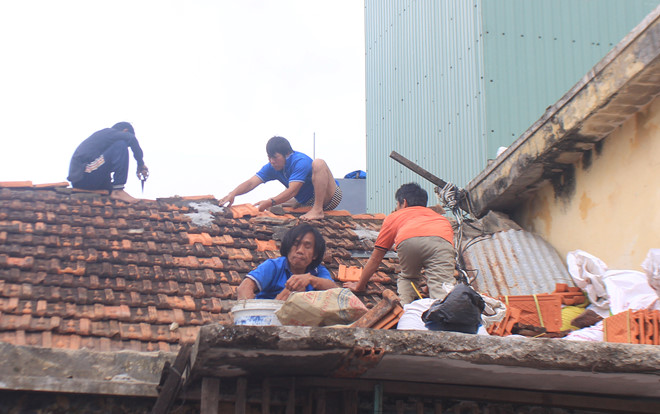
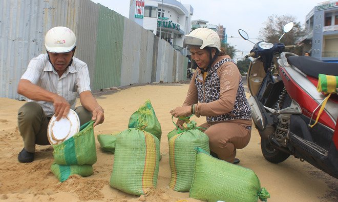
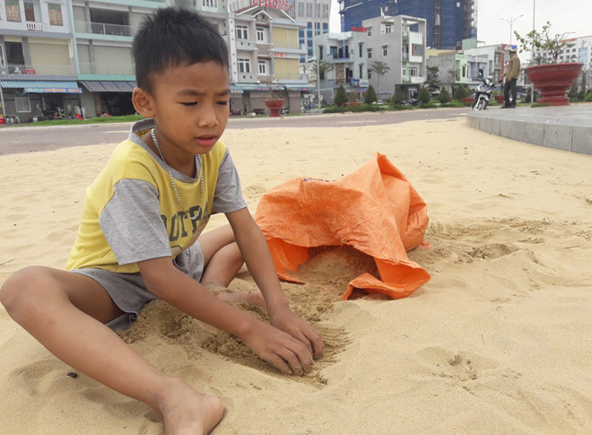
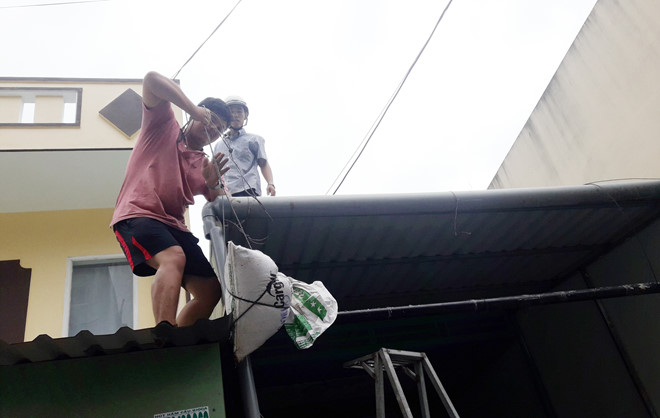
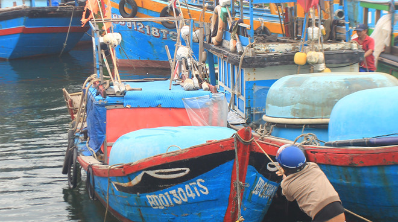
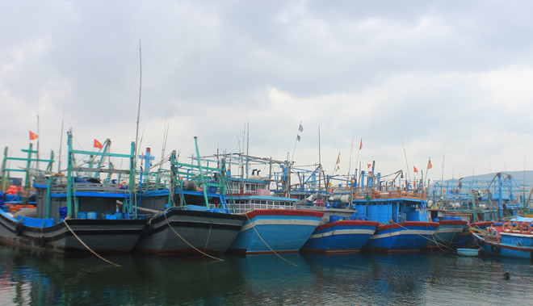

Bão số 6: Bình Định khẩn trương sơ tán dân tại 'điểm nóng'
UBND TP.Quy Nhơn (Bình Định) huy động các lực lượng quân đội, công an sơ tán khẩn cấp người dân sống dọc bờ kè xã Nhơn Hải ngay trước khi bão số 6 đổ bộ vào đất liền.
Sáng 9.11, UBND tỉnh Bình Định tiếp tục cử các đoàn công tác do lãnh đạo đơn vị này làm trưởng đoàn đến các địa bàn xung yêu của địa phương để kiểm tra, đôn đốc công tác đối phó với bão số 6.
Huy động bộ đội, công an giúp dân sơ tán
Từ ngày 8.11 đến nay, nhiều gia đình ở xã Nhơn Hải (TP.Quy Nhơn, Bình Định) đã dùng bao cát chằng chống nhà cửa. Đặc biệt là khu vực giáp với đoạn bờ kè biển Nhơn Hải bị triều cường xâm thực trong đợt bão số 5, công tác ứng phó với bão số 6 càng khẩn trương. UBND xã Nhơn Hải cũng cử cán bộ hướng dẫn người dân chằng chống nhà cửa và huy động lực lượng, phương tiện gia cố đoạn kè bị hư hỏng.

Ông Nguyễn Tiến Dũng, Phó chủ tịch UBND TP.Quy Nhơn, cho biết 2 lớp nhà dọc tuyến kè biển Nhơn Hải có khoảng 140 hộ dân phải sơ tán trong đợt bão số 6. UBND TP.Quy Nhơn đã giao UBND xã Nhơn Hải hỗ trợ dân sơ tán trong ngày 9.11.
“Chúng tôi đã lên kế hoạch, đúng 6 giờ sáng 10.11, các lực lượng quân đội, công an của TP.Quy Nhơn được điều động sẽ có mặt tại xã Nhơn Hải để giúp người dân sơ tán người và tài sản đến trụ sở thôn, trường học và các điểm an toàn. Lực lượng này cũng sẽ ở lại Nhơn Hải để hỗ trợ, sẵn sàng ứng cứu dân khi bão số 6 đổ bộ. Còn người dân các khu vực khác trên địa bàn TP.Quy Nhơn có nguy cơ bị ngập lụt, triều cường cũng đã có kế hoạch sơ tán, chính quyền các xã, phường sẽ phụ trách công tác sơ tán dân khi cần thiết”, ông Nguyễn Tiến Dũng nói.
  Trong khi đó, nhiều người dân ở khu vực nội thành Quy Nhơn cũng đến bãi biển ven đường Xuân Diệu (TP.Quy Nhơn) để lấy cát, cho vào bao tải chở về để chẳng chống lại nhà cửa. Nhiều người dân cho rằng bão số 6 được dự báo mạnh hơn bão số 5 nên cần phải ứng phó kỹ hơn. Ngoài việc chằng chống nhà cửa, nhiều gia đình còn dự trữ mì tôm, các loại thực phẩm khô, nước đóng chai, đèn cầy… để đề phòng các tình huống mất điện, nước khi bão đổ bộ.
Hoàn thành sơ tán dân trước trưa 10.11
Sáng 9.11, Chủ tịch UBND tỉnh kiêm Trưởng Ban chỉ huy Phòng chóng thiên tai và tìm kiếm cứu nạn tỉnh Bình Định Hồ Quốc Dũng đã ban hành công điện khẩn yêu cầu các cơ quan, đơn vị trong tỉnh khẩn trương triển khai công tác ứng phó với bão số 6. Theo đó, ông Dũng yêu cầu khẩn trương kiểm đếm, hướng dẫn tàu thuyền của ngư dân neo đậu để tránh trú bão và bảo đảm an toàn cho tàu vận tải neo đậu tại khu vực cảng Quy Nhơn.
Các địa phương trong tỉnh quyết liệt triển khai lực lượng, phương tiện tiến hành sơ tán dân ở các khu vực dễ bị ngập lụt, triều cường, kiên quyết không để dân ở lại khu vực nguy hiểm khi bão đổ bộ. Công tác sơ tán dân phải hoàn thành trước trưa 10.11. Đảm bảo an toàn cho người và tài sản đối với các khu vực hoạt động du lịch ven biển, đặc biệt là tại xã Nhơn Lý và đảo Nhơn Châu.
 Ông Hồ Quốc Dũng cũng yêu cầu các cơ quan, đơn vị hướng dẫn người dân chằng chống, gia cố nhà cửa, trường học, bệnh viện…
Theo Cảng vụ hàng hải Quy Nhơn, đến sáng 9.11 có 56 tàu hàng tại khu vực cảng Quy Nhơn đã được đơn vị bố trí vào các khu vực neo đậu an toàn. Cảng vụ hàng hải Quy Nhơn cũng đã khuyến cáo các tàu sắp tới làm hàng tại Quy Nhơn tạm thời chuyển hướng vào các cảng khác để tránh bão. Đồng thời, yêu cầu các tàu kiểm tra neo tàu kỹ lưỡng, đưa tất cả người trên tàu không phải là thuyền viên ra khỏi tàu trong thời gian có bão, việc bốc dỡ hàng hóa của các tàu tại cảng Quy Nhơn phải thực hiện xong trước 8 giờ sáng ngày 9.11.
Trong khi đó, Giám đốc Cảng Quy Nhơn Phan Tuấn Linh cũng ký văn bản thông báo đơn vị này sẽ tạm dừng các hoạt động xếp dỡ hàng hóa từ 8 giờ ngày 9.11 để đối phó với bão số 6 cho đến khi có thông bão mới.
Giới thiệu

Họ tên: Nguyễn Văn Abcd
Địa chỉ: Hà nội Việt nam
SĐT: 0123456789

Follow Me
YouTube